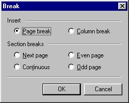

| |
|
About AbiWord About Open Source Index Contents What's New Check Version Introduction Installation Getting Started The Workspace Entering Text Formatting Edit Commands Paragraphs Styles Inserting Objects Printing Preferences Shortcuts abisource.com FAQ Credits Search |
Breaks and section breaksAbiWord can insert column breaks, page breaks, and section breaks. To insert a break in a document, just position the insertion cursor where you want to insert it, then go to the Insert menu and click on "Break..." Then the window below appears:  BreaksThe Insert heading lets you define page and column breaks manually, even if AbiWord places breaks automatically.
Next, click on the "OK" button to confirm or on "Cancel" to cancel. A page break can also be inserted with the keyboard by holding down "Ctrl" and pressing "Enter". Section breaksA specific page layout, such as page orientation or margins, is by default applied to the whole document. Sections allow specifying different page layouts (like the page orientation) inside the same document. The heading "Section breaks" has not yet been implemented in version 0.7.7 of AbiWord. It is possible, however, to position the insertion cursor where you want to insert the section and press the "Alt" and "Enter" keys simultaneously. This can be used, for example, to insert a two- or three-column section after a one-column section. |